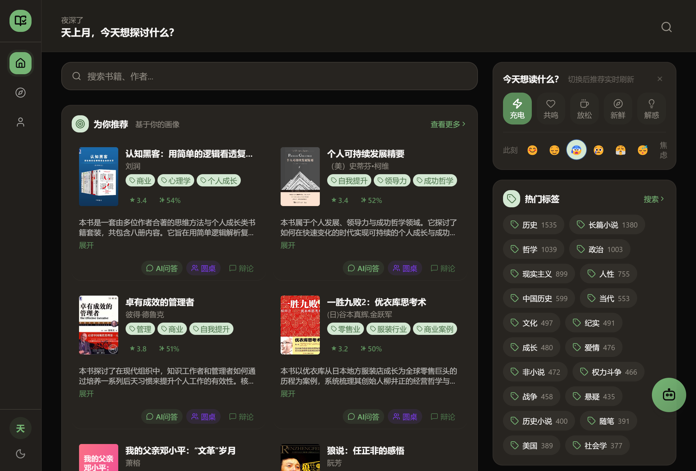
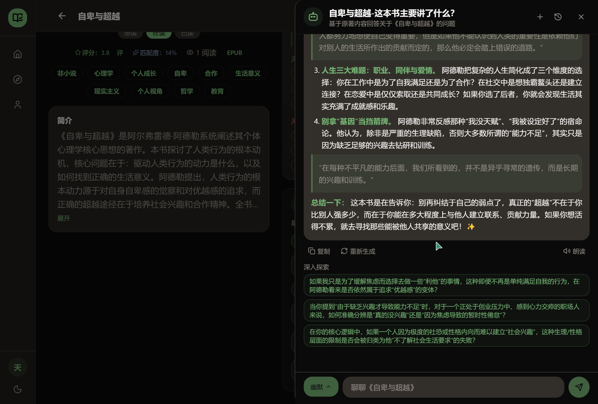
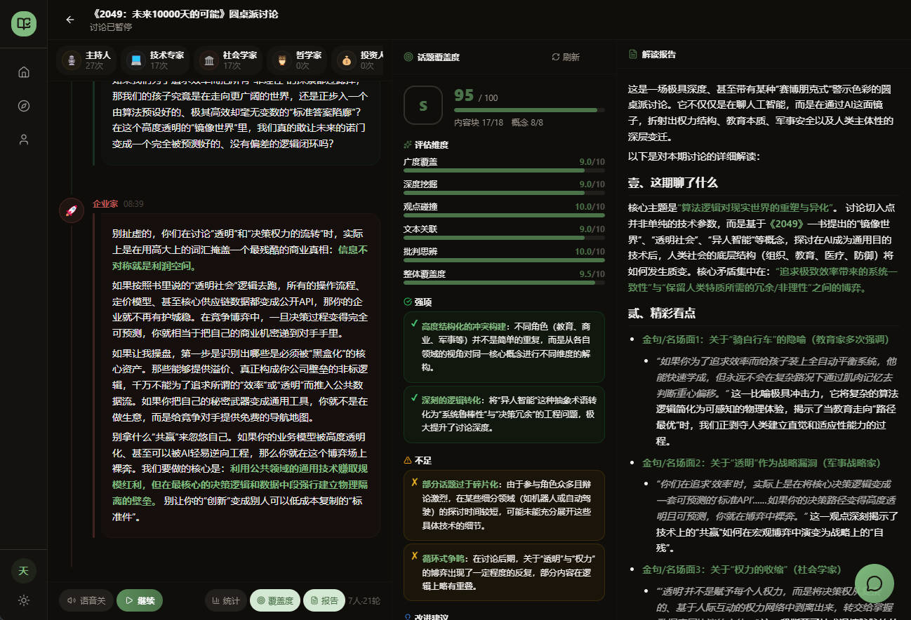
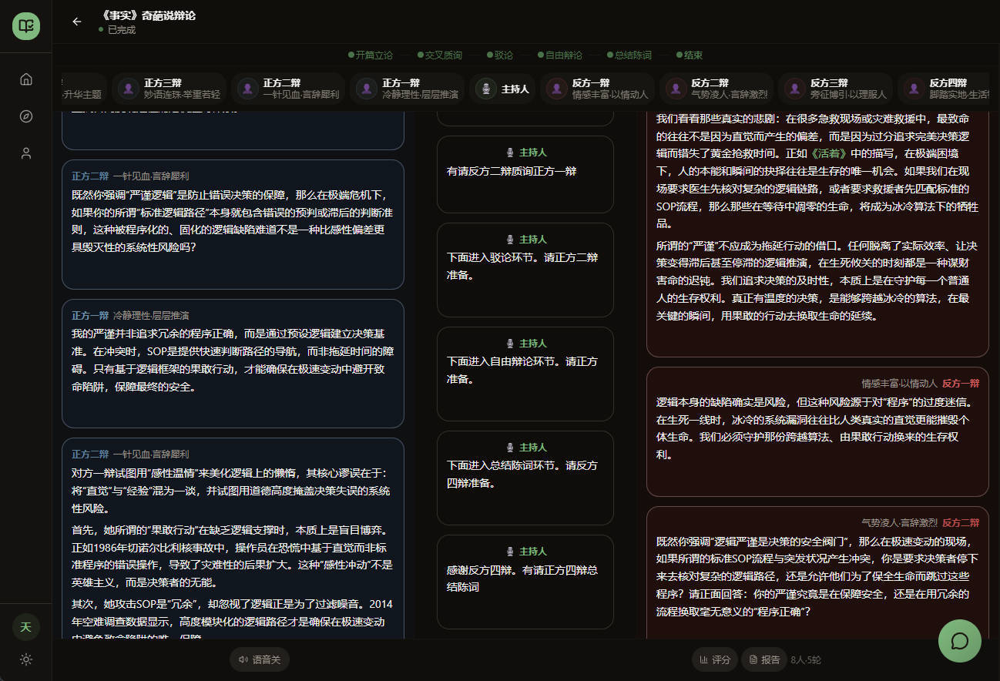
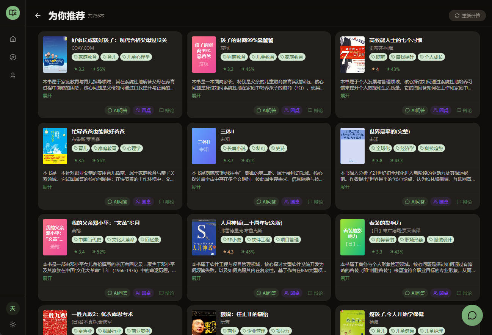
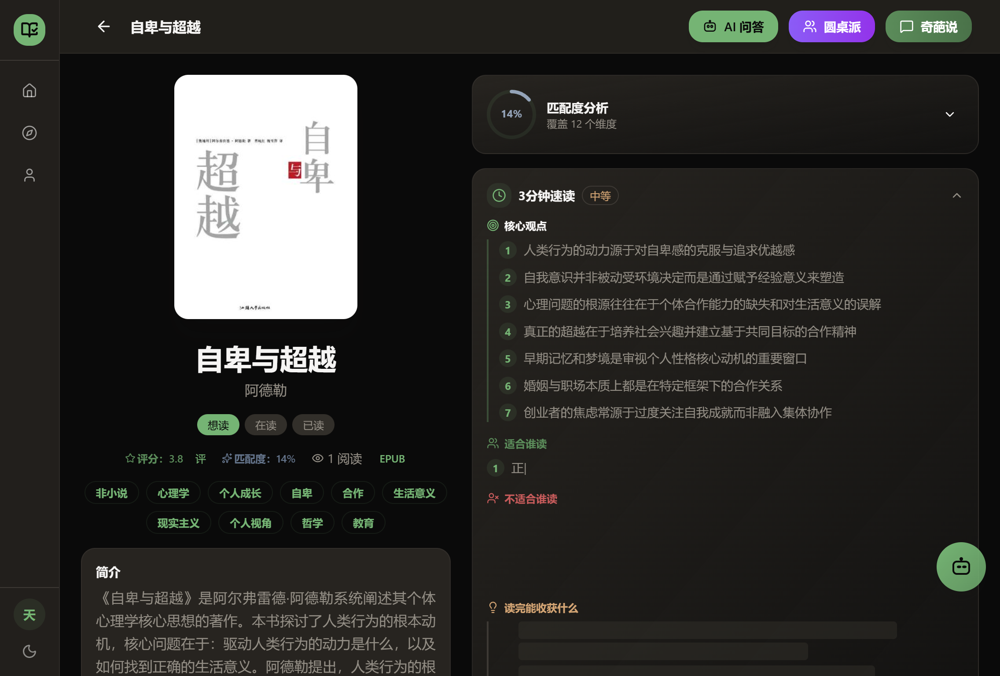

第一章
读完一本书之后
发生了什么？
传统阅读应用的尽头是"翻完最后一页"。
KBook 的起点，是你合上书后想说的第一句话。
16 种性格 AI 围剿一本书 · 圆桌激辩、立场交锋
让读书变成一场真人秀
📋 目录
为什么传统阅读应用不够好？
四大核心体验重新定义阅读后场景
React 19 + Spring Boot 3.4 + AI 引擎
为什么 KBook 是真正的「AI 原生产品」
跨书对话 · 阅读可视化 · 插件系统
TRAE Work + TRAE IDE 实现全流程
第一章
传统阅读应用的尽头是"翻完最后一页"。
KBook 的起点，是你合上书后想说的第一句话。
😫 痛点分析
读完一本好书，满脑子想法却找不到人讨论。朋友圈发读后感？没人懂。
翻遍知乎豆瓣，只有情绪化书评。想要针对书中某一段的深度分析？不存在。
"全网都在读"≠适合你。30 岁 INTJ 和 35 岁二孩 ESFJ 读到同一本"人生指南"，合理吗？
你只能看到自己的解读。但你有没有想过：一个毒舌的人会怎么看？一个理想主义者呢？
第二章
书不是被读完的，是被 聊透、辩明、想通 的。
✨ Features

全书 RAG 向量化，AI 真正"读过"这本书。每个回答都有原文出处。
多 AI 角色围炉夜话，基于各自人生阅历发表独立见解。
16 种性格辩手，完整辩论流程，AI 评委四维度打分。
基于人生状态 + 情绪 + 意图的三重匹配引擎。
💬 Feature 01

全书按 800 字分块注入 Qdrant 向量库，1024 维向量 + int8 标量量化，精准检索全书内容。
苏格拉底式对谈、观点压力测试、跨章节灵魂追问 —— 每个回答都有原文出处。
AI 自动生成深入追问建议，引导用户从不同角度探索书籍内容。
🫖 Feature 02
多个 AI 角色基于各自设定（人生阅历、专业背景、性格倾向）独立发言，角色间互相质疑、补充。
AI 主持人引导话题深入，确保讨论不跑偏、不冷场。
讨论结束后生成覆盖度分析，帮你发现"哪些角度还没聊到"。

⚔️ Feature 03

逻辑型、毒舌型、幽默型、理想主义型……每个人设都鲜明立体，开口就是人设。
立论 → 质询 → 自由辩论 → 结辩，完整模拟真实辩论赛流程。
论点 / 论据 / 表达 / 反驳四维度打分，生成详细点评报告。
🎯 Feature 04
年龄 / 婚姻 / 育儿 / MBTI / 兴趣标签，构建你的多维阅读 DNA。
开心、焦虑、疲惫……不同情绪下同一本书的推荐优先级完全不同。充电 / 共鸣 / 解惑，意图不同推荐不同。
每本书展示与你的匹配分数，量化推荐理由，拒绝"因为热门所以推你"。

🏗️ Architecture

TypeScript
Build Tool
shadcn/ui
State
Java 17
AI 编排
JWT
实时对话
主数据
缓存
全文检索
向量检索
🆚 Comparison
🗺️ Roadmap
🛠️ 构建历程
从创意提案到可体验 Demo，全程借助 TRAE Work + TRAE IDE
用 TRAE Work 快速输出创意提案 HTML，将"阅读后聊天"的核心想法具象化为产品方案。
用 TRAE IDE 搭建 React + Spring Boot 全栈架构，AI 辅助编码大幅提升开发效率。
用 TRAE Work 管理前端重新设计方案文档，AI 辅助梳理 10 个 Phase 的详细变更计划。
这就是 TRAE AI 创造力大赛的魅力 —— 0 技术门槛，人人都能创造。
🏁 Join Us
0 技术门槛，人人都能创造。点击下方链接开始你的 TRAE 创造力之旅。
TRAE AI 创造力大赛保姆级教程
手把手教你从创意提案到可体验 Demo
完整赛事规则、赛道说明
评审标准与奖励发放详情
带着想法来，剩下的我们一步步教你完成。期待你的作品！